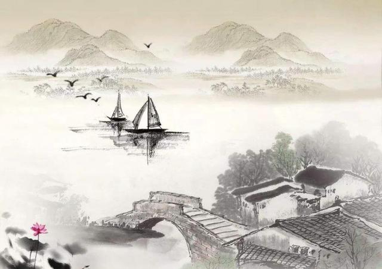
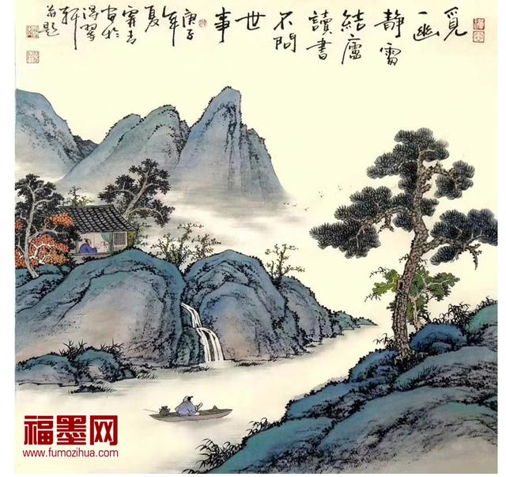
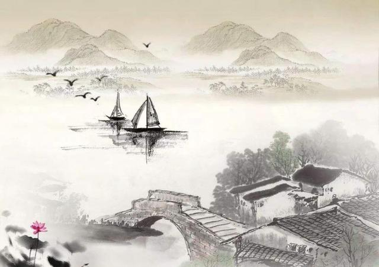
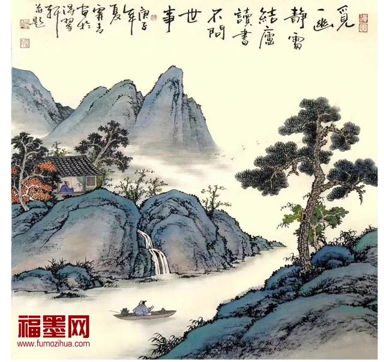

紅豆生南國，春來發幾枝。
怨君多採擷，此物最相思。
送別
山中相送罷，日暮掩柴扉。
明年春草綠，王孫歸不歸？
| 相思子 紅豆生南國，春來發幾枝。 怨君多採擷，此物最相思 |
 |
| 送別 山中相送罷，日暮掩柴扉。 明年春草綠，王孫歸不歸？ |
 |
| 相思子 紅豆生南國，春來發幾枝。 怨君多採擷，此物最相思 |
 |
| 送別 山中相送罷，日暮掩柴扉。 明年春草綠，王孫歸不歸？ |
 |